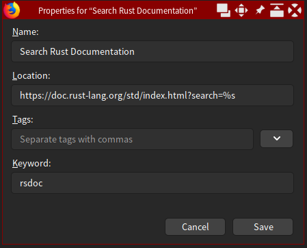
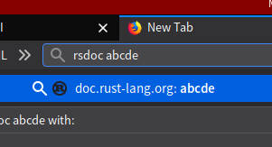
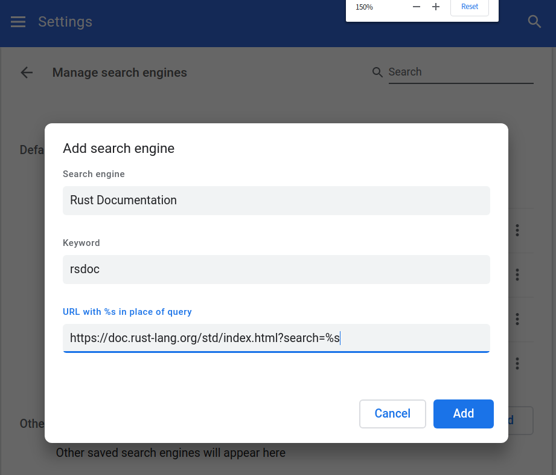
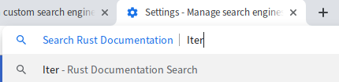
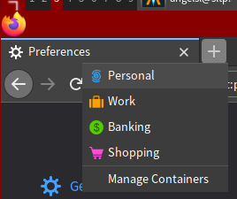
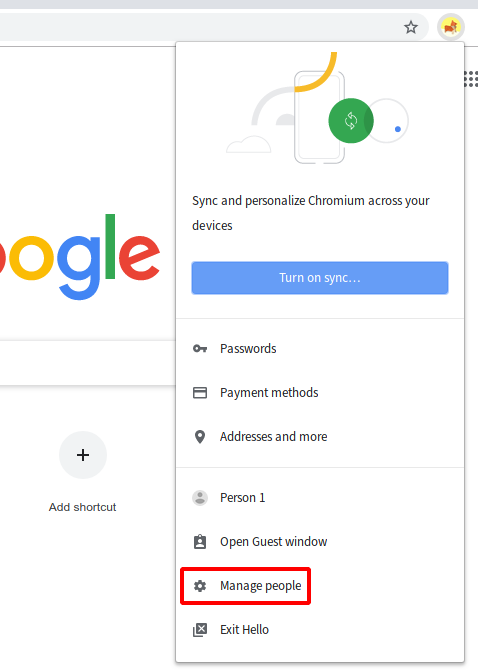
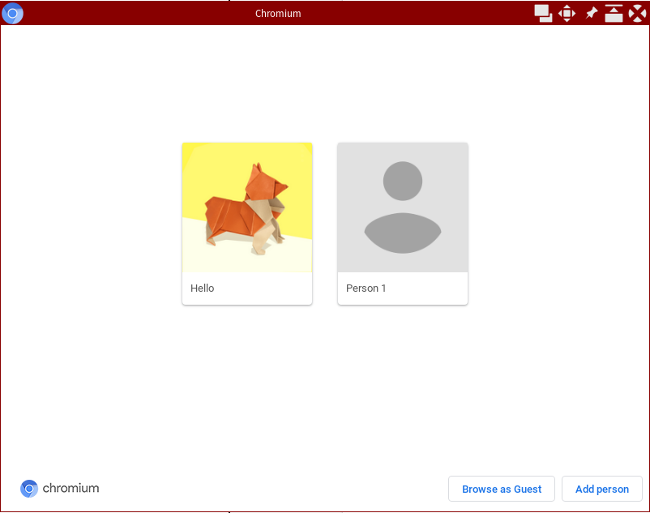

Hacker Tools
Web and browsers, security and privacy

Slides
https://hckr.cc/ht2324s1-w10-slides (permalink)
https://hckr.cc/ht-slides
Brief overview
- Browsers and the web
- Security and privacy
Browsers and the web

Keyboard shortcuts
- C-t: new tab
- C-T: reopen closed tab
- C(-Shift)-Tab: change tab
- C-l/M-d/F6: jump to address bar
- C-f: search in page
- C-w/C-F4/Middle-click: close tab
- F12/C-M-i (Mac): developer tools
Google search operators
"X": must appear and must appear exactlysite:xyz.com: results from xyz.com onlyfiletype:xyz: xyz filetype onlydefine:xyz: define xyz
More: Google docs; External docs
LLM backed search engines
Bookmark keywords (FF)
Custom search engines
Custom search engines
(FF) Container tabs
Long press the +
Firefox profiles
about:profiles
Chromium profiles
Chromium profiles
(FF) about:config tweaks
dom.select_events.enabled: false
stop websites from disallowing highlighting textdom.event.clipboardevents.enabled: false
stop websites from disallowing copying/pastingdom.event.contextmenu.enabled: false
stop websites from disallowing right-click (caveat: websites' custom context menus are disabled)
In FF, Shift+RightClick overrides.
Developer tools
Not only useful for development; can be used for one-off scraping, removing annoyances, etc
- Downloading images/videos e.g. Flickr
- Scraping (with JS)
- Debugging why something isn't working
Bookmarklets
Bookmarks, but the URL starts with javascript:
Snippets of JavaScript to do stuff. E.g.
Browser selection
If you use multiple browser for different purposes, you may want to have a tool open specific browser for specific links
- Finicky: Mac
- Hurl: Windows
- Linux Browser Selector: Linux
Browser extensions
- uBlock Origin(C): adblock
- Stylus(C): user styles for websites
- Violentmonkey(C)(S): user scripts from OpenUserJS, GreasyFork, Github Gist
- Tree Style Tabs (FF only)
- HTTPS Everywhere
- Zotero Connector(C)
User scripts
Like bookmarklets on steroids
Scripts that automatically run on each page load
Some useful scripts:
Automation with user scripts
// ==UserScript==
// @name Example
// @match https://www.google.com/webhp
// ==/UserScript==
let searchbox = document.getElementsByName("q")[0];
searchbox.value = "Hello";
searchbox.form.submit();Useful web APIs
- Telegram bot API: e.g. as simple push notifications
- IFTTT: service that glues many services together
Quick notifications with Telegram
curl -L 'https://api.telegram.org/bot<TOKEN>/sendMessage?chat_id=<CHAT ID>&text=Build+completed.Extras
Automation with Selenium
Autotab: An AI-powered Chrome extension to create Selenium scripts
Security and privacy
Some security blogs
Know your threat model
Government? Random person getting hold of your laptop?
There's always a tradeoff when you make things more secure

Have I Been Pwned
Password managers
Full-disk encryption
Protect your data at rest
- Windows: BitLocker (only available on Pro)
- Linux: LUKS/dm-crypt
- macOS: FileVault
- Cross-platform: VeraCrypt

Plausible deniability
File-based encryption
Protect individual files
VPN services (paid)
Protect your online privacy
- Mullvad (based in Sweden)
- Tunnelbear (based in Canada)
- NordVPN (based in Panama)
- ProtonVPN (based in Switzerland)
Logs? Never heard of it.
VPN software
Run your own VPN
Setting up a server is out of scope. Here are some guides: OpenVPN, WireGuard
WireGuard is a very modern VPN. If you are setting up a new VPN, and it meets your needs, use it!
https://pivpn.io for a quick script to run a VPN server
DNS
Choose a 'better' DNS provider!
Setting up a server is out of scope. Here are some guides: AdGuardHome, Pi-Hole
Messengers
- Signal: Trusted by security community
- Element/Matrix: Also trusted; federated
- WhatsApp: Supposedly uses Signal protocol
- Telegram: Questionable encryption
There are many other messengers but most offer no privacy at all.
See privacytools.io for more privacy-focused alternatives to common software.
See Firefox Hardening for a list of settings that reduces tracking.
See privacytools.io: Private Browser for a list of browsers that have focuses on privacy.
You could consider reducing your dependency on Google, for example, by moving to a different email provider.
Disposable email
Privacy frontends
type of software that provides a more private, ad-free, and user-friendly experience for accessing popular internet services such as social media networks
- Invidious: Youtube alternative frontend
- Nitter: Twitter alternative frontend
- Teddit: Reddit alternative frontend
LibRedirect: Browser extension that can be used to switch between instances

PCs are unsafe
Mobile phones nowadays have better isolation
Thank to Optiver for the food!
Thank you! Questions?
Feedback: hckr.cc/ht2324s1-w10-feedback (permalink) || shorter link: hckr.cc/ht-feedback